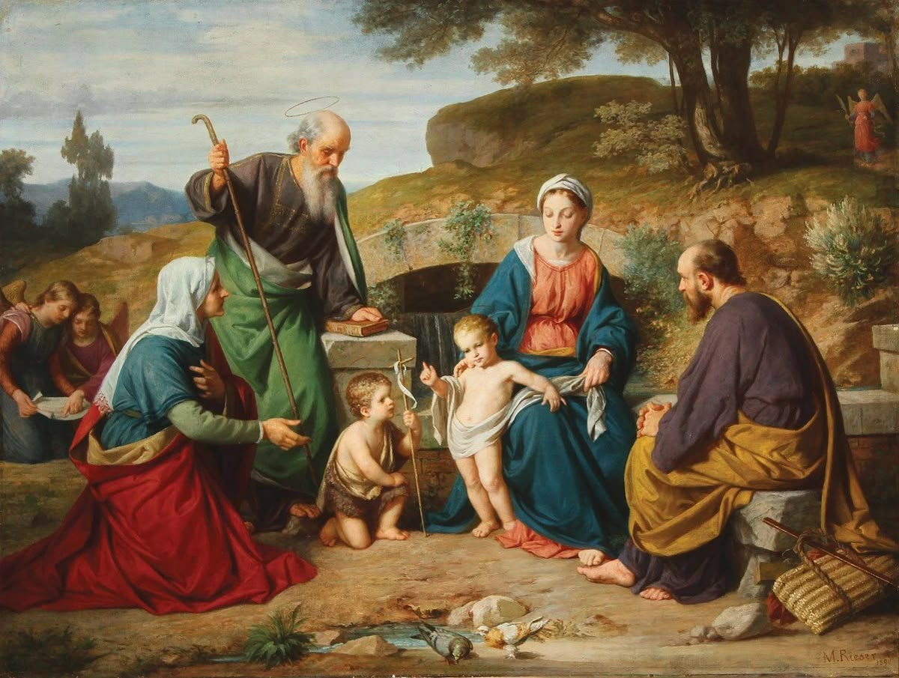

Quando falamos de humanidade, daquilo que todos passam diariamente, a caridade continua sendo a maior e mais bela virtude. Você não não é capaz de medir o peso do dia de alguém, se tem muito trabalho, se tem n filhos, se tem uma jornada diária de tantas horas… Você não sabe o quanto pesa até carregar aquele peso, e sabemos que nenhum humano, exceto Jesus, é capaz de carregar a cruz de ninguém. Você não sabe quantos cortes levou o açougueiro hoje, 10? Talvez. Sabia que hoje o marceneiro pisou em 10 pregos? Não? Bom, talvez. Sabia que uma mãe só conseguiu dormir 2h noite passada? Talvez. Não podemos viver de incertezas, de fato, mas se nunca saberemos o peso do próximo, assumamos que está muito pesado, pois de fato pode estar.
“tome sua Cruz cada dia e siga-me.” (Lc 9, 23)
E a resposta para esse peso é nossa aceitação, nosso olhar e estar com Jesus.
“Vinde a mim todos vós que estais aflitos sob o fardo, e eu vos aliviarei. Porque meu jugo é suave e meu fardo é leve.” (Mt 11, 28)
Nossa contemplação de sua beleza e Amor, e assumir que Dele — e só Dele — vem nossa força, toda fonte de graças e humildade para pedi-las, para amar e deixar que a caridade reverta em bem toda aflição. É esse bem e paz que devemos estar cheios, e somente deles que estaremos se ficarmos com Jesus, próximos Dele. E é nesse ficar com o bem que podemos doar bens, transbordar graças àqueles que estão cansados. Acredito que Jesus quis dizer isso também quando pediu para vender tudo e dar aos pobres. Dar os nossos BENS. Que bem maior temos, se não nossa caridade? Doar o nosso amor. Sempre.